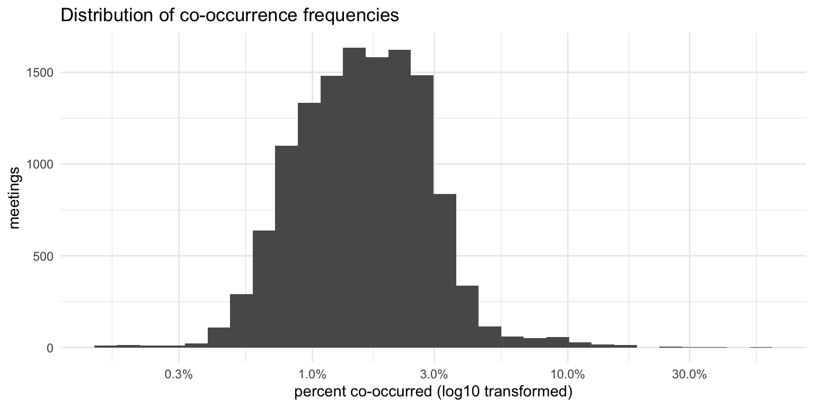
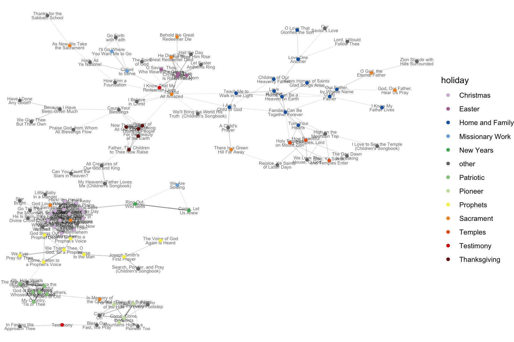

Which hymns cluster with each other?
Some hymns tend to be sung during the same meeting as other hymns; they co-occur. This is most apparent in holiday hymns. For example, if
1 Methods
Since this is a somewhat technical post, let me take a moment to explain my methods. First, I start off with my entire dataset, which contains data from over 95,000 sacrament meetings.
To check co-occurrence of all hymns, here’s my procedure. I started with
I then repeated this procedure for every pair of hymns, all the way until
Most combinations—100,007 or 72.1% of them—were actually not attested in my dataset. Some of these include pairs of sacrament hymns, such as
But that means I did see 38,594 different combinations, which is a lot. It’s obviously way too large of a task to try and go through or explain all those pairs. So, I needed to find some sort of cutoff point between the most strongly paired hymns and others that happened to occur together.
2 Distribution of co-occurrences
Figure 1 shows the distribution of these 38,594 pairs of hymns and how often they occur in the same meeting.
The x-axis in this plot is log10 transformed because there were many pairs that didn’t occur in very many meetings and a few pairs that occurred in a lot; transforming it like this makes it easier to see the distribution. For example, on the far left of the plot, we see some very short bars. This means that a few pairs of hymns rarely occurred together. In this case, all of of these very short bars were combinations of two sacrament hymns. It is pretty rare for a sacrament hymn to be sung during a different slot in the meeting, so to divide that small number by the very large number of times that those sacrament hymns are otherwise sung results in a small co-occurrence rate.
The middle of the plot shows where the majority of the data lies. The most frequent co-occurrences by sheer number of meetings were actually not very interesting because they usually involve a sacrament hymn. In some cases, the pairs are between somewhat less frequent hymns like
But then we get to the far right of Figure 1. There were a few pairs of hymns that maybe didn’t occur in too many meetings, but when one of them did the other one tended to as well. This is what I’m most interested in. As mentioned above, the strongest pair was
Let’s further explore these pairs in a little more detail and in a way that’s a little more interesting to look at.
3 Clusters
Figure 2 is a network visualization of the most commonly co-occurring pairs of hymns. There are lots of decisions that go into creating a plot like this, so don’t take it as the absolute truth. For one, I couldn’t show every pair of hymns because it would be far too cluttered. So I had to decide on a cutoff point. Based on Figure 1, I knew that a cutoff of roughly 10% co-occurred would likely be a good starting point since pairs above that point were what I expected to see and many pairs below that were not. After toying around with it, I eventually settled on pairs of hymns that occurred with each other 7% of the time.
